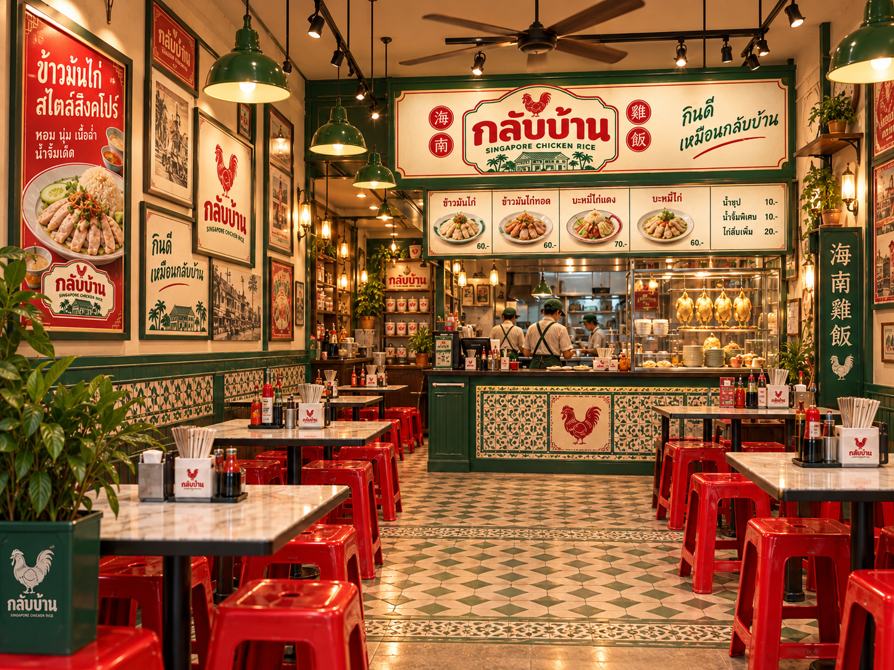
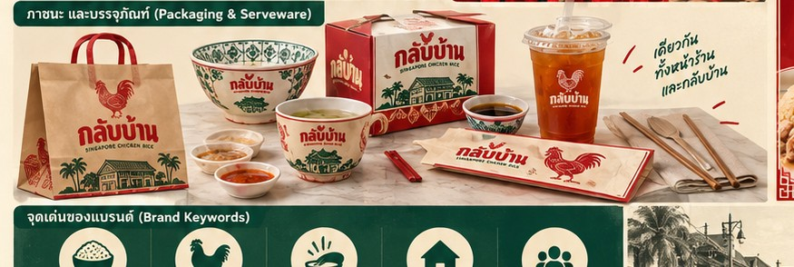

回家กลับบ้านมากกว่าข้าวมันไก่
คือความรู้สึกคุ้นเคย
คือความรู้สึกคุ้นเคย
WHY “กลับบ้าน”
ร้านที่อยากให้
ร้านที่อยากให้
การกินข้าวเป็นเรื่องง่าย
เราเอาความรู้สึกของร้านข้าวย่านเก่า เก้าอี้แดง ป้ายจีน และครัวเปิด มาผสมกับการนำเสนอที่สะอาดและร่วมสมัย — เพื่อให้ทุกจานเข้าถึงง่าย แต่ยังมีตัวตนชัดเจน
หอมข้าวข้าวมันคือพระเอกครึ่งจาน
นุ่มไก่เนื้อสัมผัสต้องกินง่ายทุกคำ
น้ำราดเด็ดรสจำของแบรนด์